| 日付 | 2016年8月8日（月） - 2016年8月11日（木） | ||||||
|---|---|---|---|---|---|---|---|
| 山域 | 八ヶ岳、北アルプス | ||||||
| メンバー | 家族（妻、長女・5歳、長男・3歳） | ||||||
| 山行形態 | 子連れ3泊4日ホテル泊 | ||||||
| アクセス | 車、バス | ||||||
| ルート (Map3) |
|
3日目
本日も朝6時過ぎに食事を提供して頂く。朝食の時間を柔軟に対応して頂いて助かった。
昨日とは違い、バスからは乗鞍岳山頂部がはっきりと見える。本日は快晴だ。
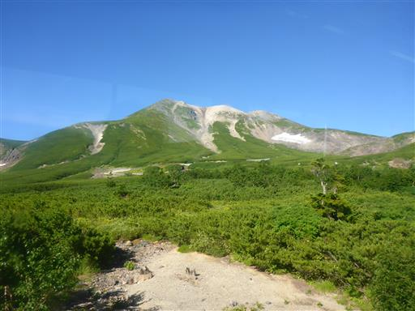
畳平に到着。標高2700m。
視界が広がり、こんな景色だったんだと、ようやく畳平の全体像を把握する。

昨日訪れた神社にお礼参り。見事に晴れてくれた。
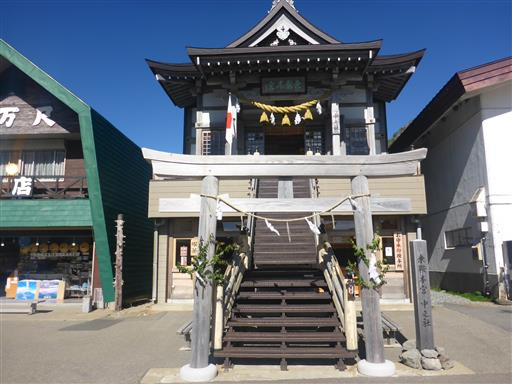
準備を整えて歩き始める。昨日歩いたお花畑を突っ切って行く。
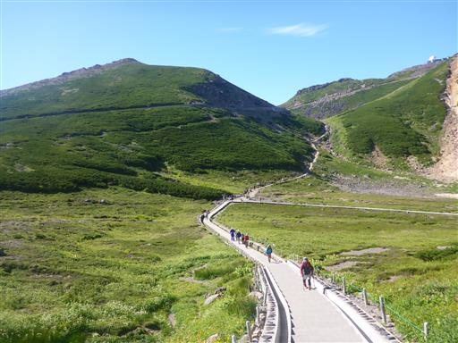
ヨツバシオガマ。
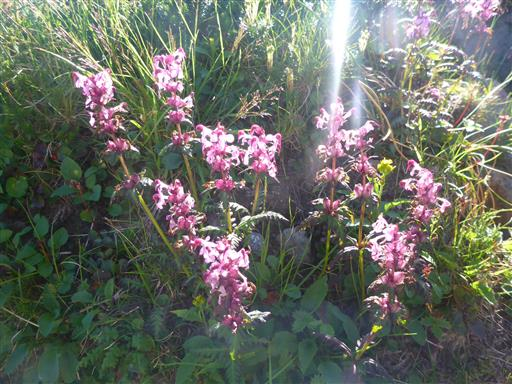
チングルマは花が終わって綿毛になっている。
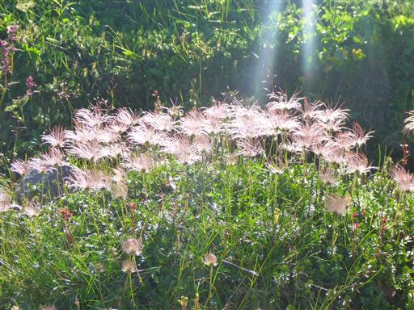
振り返ると畳平の側に聳える恵比寿岳が大きい。
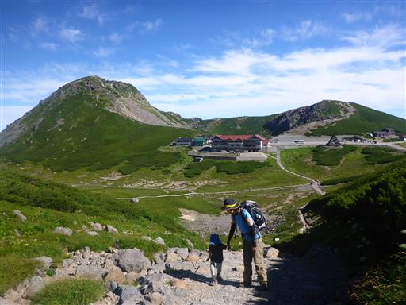
周囲はハイマツに覆われている。この辺りはもう高山帯だ。
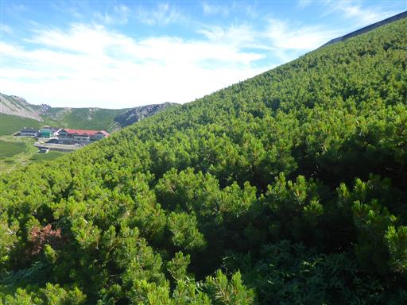
坂道を登りきると、畳平から続く砂利道と合流する。
しばらくは砂利道歩きが続く。
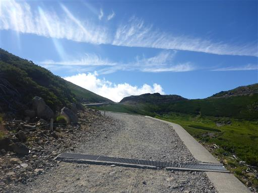
眼下に不消ヶ池が見える。きれいな青色の湖だ。
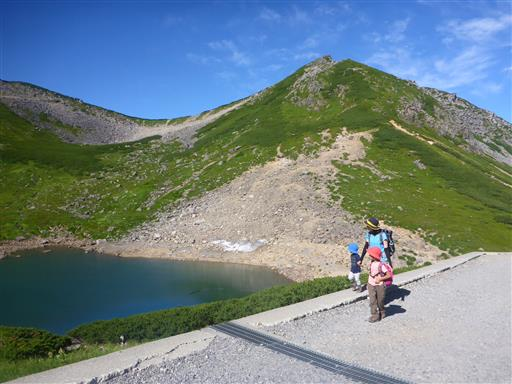
あちこちの砂礫地にコマクサが咲いている。
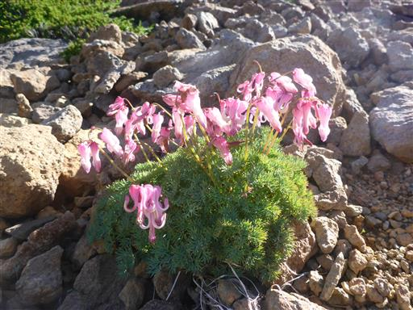
摩利支天岳への道と分かれると、乗鞍岳山頂が見えてくる。
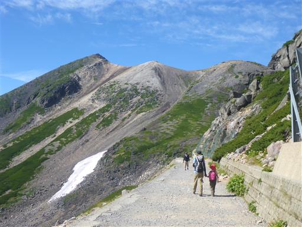
眼下にはバスで辿ってきた乗鞍エコーラインが見える。
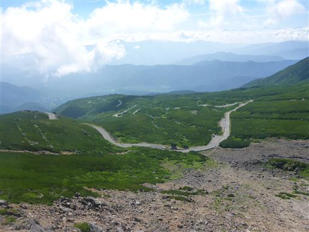
最高峰・剣ヶ峰の全体像が視界に飛び込んでくる。一番左のピークが剣ヶ峰だ。
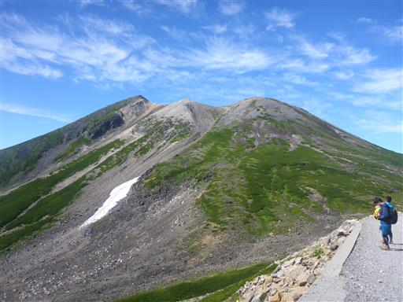
肩ノ小屋に到着。200名宿泊可能な大きな小屋だ。
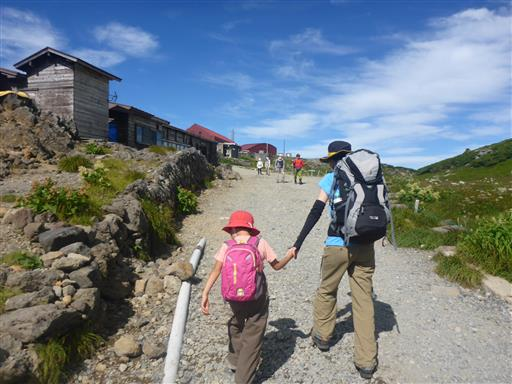
ここから乗鞍岳への本格的な登りになる。
息子は登りたくないようで、キャリアに乗せてあげる。
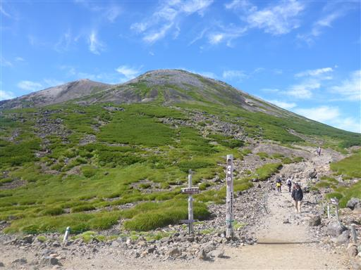
イワツメクサの白くて小さな花が咲いている。
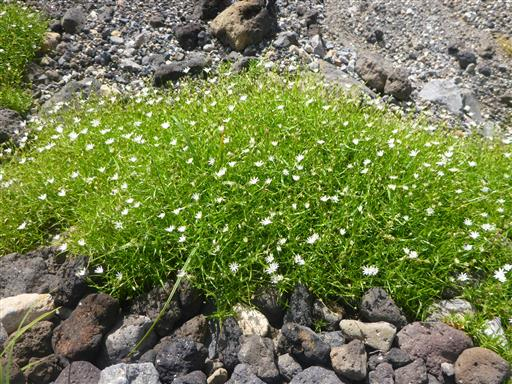
上空はきれいな青空と薄い雲が広がっている。
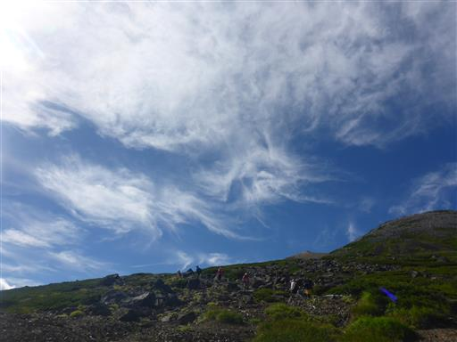
標高を上げていくと、北アルプスの槍ヶ岳と穂高岳の山頂部が見えてくる。
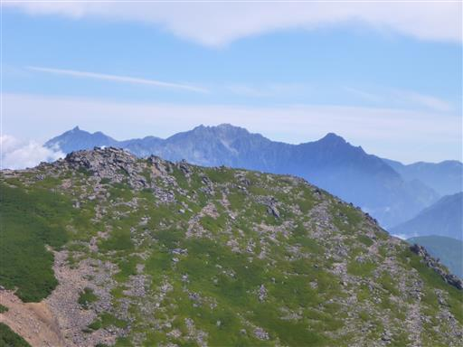
山頂直下の権現池。噴火口にできた火口湖だ。
乗鞍岳最高所にある湖沼で、御嶽山の二ノ池に次ぐ日本第2位の高所にある。
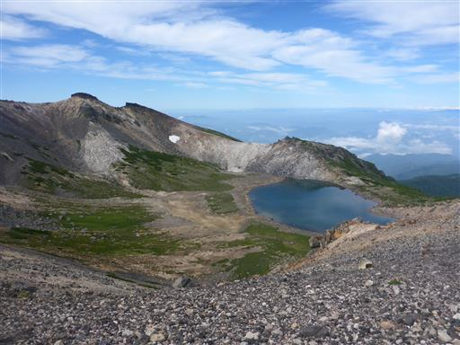
遠く白山の姿が見える。こちらの方向は白山が抜きんでて標高が高いため、良く目立つ。
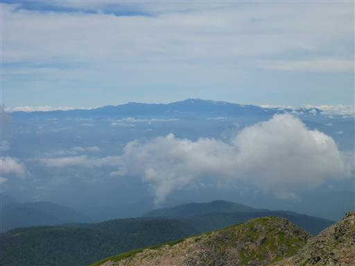
蚕玉岳に到着。山頂まであと少しだ。
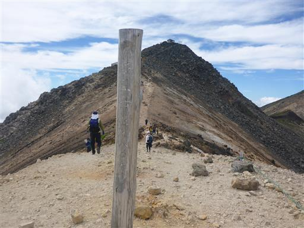
ここまで登ると北アルプスの山々が完璧に見える。
左から槍ヶ岳、奥穂高岳、前穂高岳だ。その他の山々は残念ながら雲の中だ。
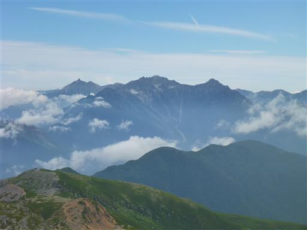
乗鞍岳山頂に到着する。標高3026m。
山頂には朝日権現社が祀られている。
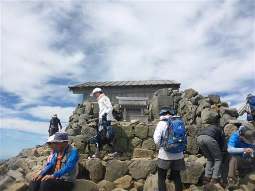
裏側に回ると乗鞍岳の山頂標識が立っている。
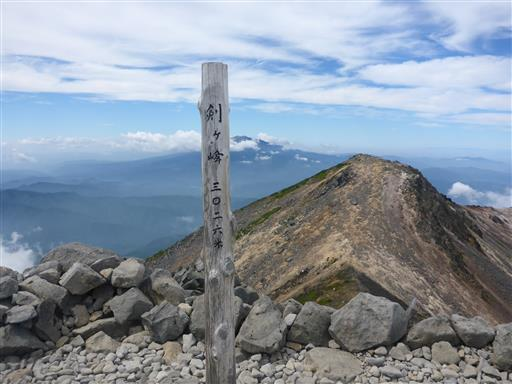
こちらにも別の神社・本宮本殿が祀られている。
神社が建っているからか山頂部はあまり広くない。
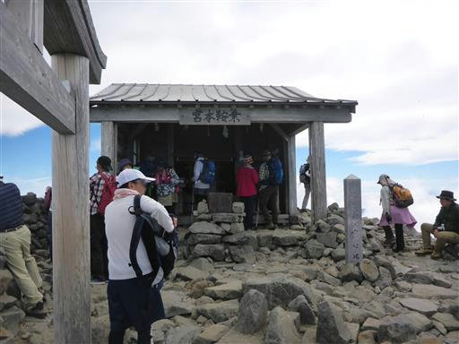
山頂からは雄大な展望が広がる。乗鞍岳の広大な山頂部を見下ろす。
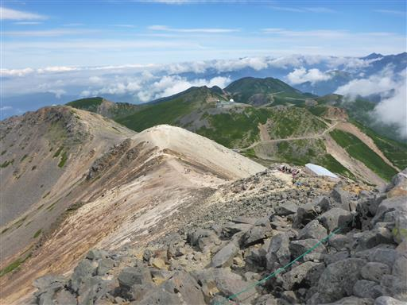
こちらは大日岳。山頂から尾根が続いているが、立入は禁止されている。
乗鞍岳は23のピークといくつかの湖沼が点在する大きな山で、御嶽山とよく似ている。
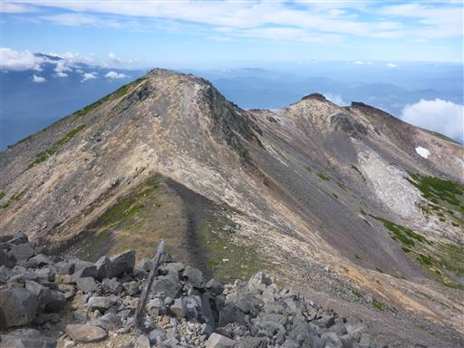
お隣の御嶽山は少し雲がかかっている。
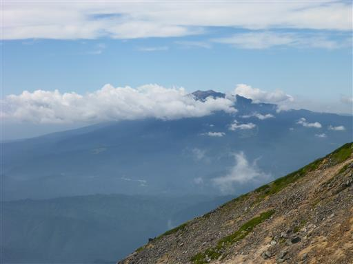
眼下の高天ヶ原に雲が押し寄せている。
少しずつ雲が上がってきているが、これだけの展望があれば上出来だ。
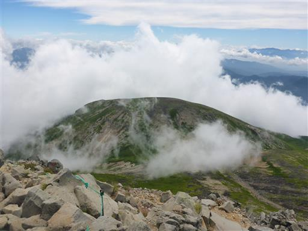
鳥居を潜って下山を開始する。
山頂直下は、登りと下りで道が分けられているのだが、
どうせなら登りの道を鳥居側にして欲しかった。
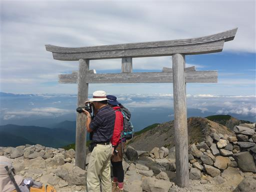
乗鞍岳の山々を眺めながら、明るい道を下って行く。
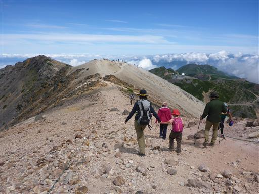
息子は岩だらけの歩きにくい道を手を繋いで降ってきたが、
傾斜が緩くなると一人でも上手に歩ける。
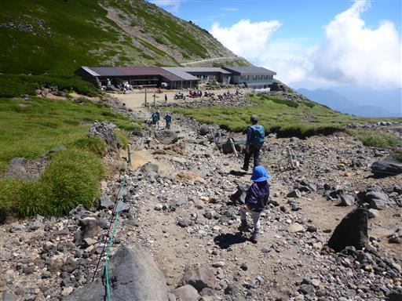
肩ノ小屋の前にあるベンチで昼食をとる。
山頂は人が多く狭かったが、ここは広々としている。
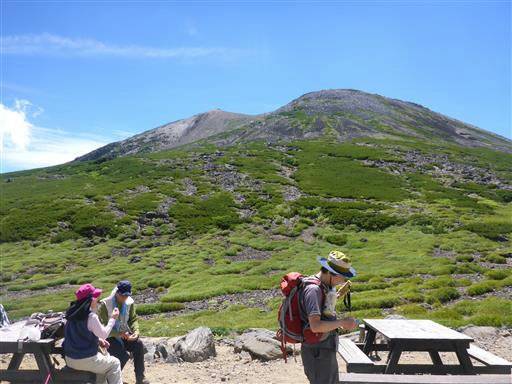
緑の斜面にいくつかの筋が見える。水が流れる筋なのだろうか？
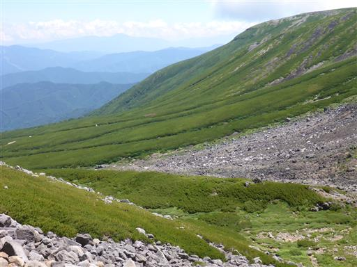
昼食を取ったら畳平に向けて歩き出す。
眼下には乗鞍岳の中腹にある乗鞍高原が見える。深い森の中に町が広がっている。
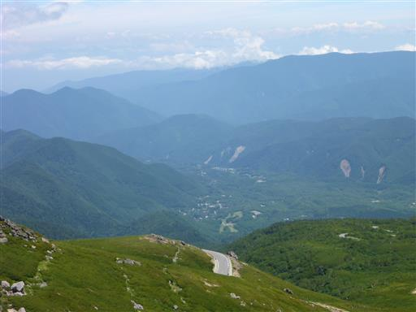
復路は富士見岳に寄り道することにする。
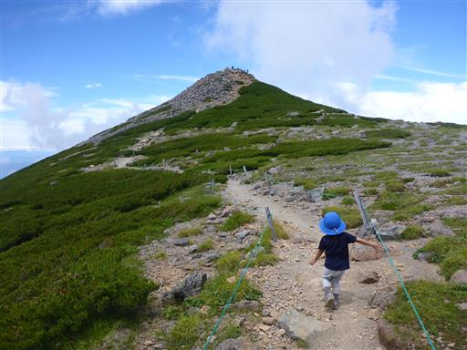
息子は登りになっても文句を言わず一生懸命登っている。
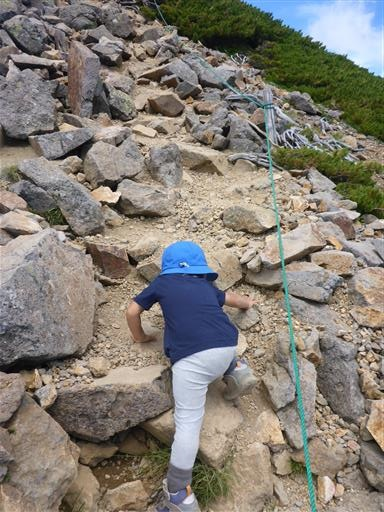
富士見岳山頂に到着。標高2817m。
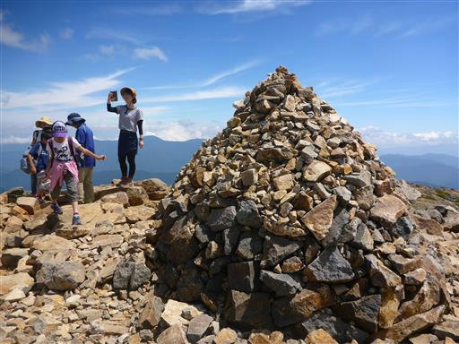
山頂からは畳平の展望が非常に良く、恵比寿噴火口や鶴ヶ池を見渡せる。
恵比寿岳は乗鞍岳の中で最も新しい火山で、およそ2000年前に噴火したらしい。
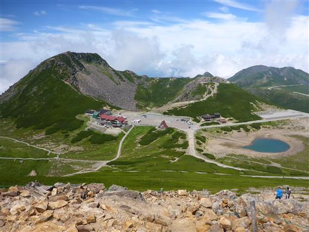
こちらは剣ヶ峰方面の景色。先ほど登った尖った山頂が見えている。
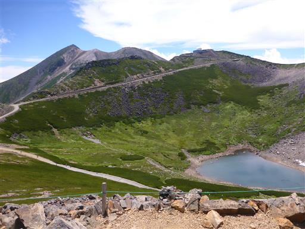
東には丸い頭を持つ鉢盛山が見えている。
歩行時間が長いので今回は見送ったが、いつかは登ってみたい山だ。
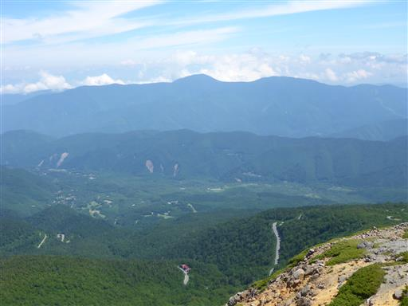
遠く山々が折り重なって見える。この辺りの地域は非常に山深い。
もう少しゆっくりしようと思っていたが、1時間に1本のバスの時間が
近づいてきたため下山することにする。
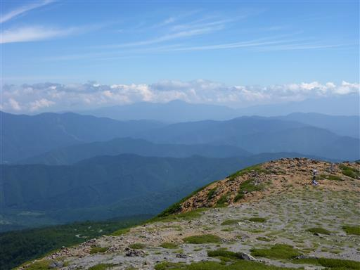
下りは速い。標高差もほとんど無いため、あっという間に下山する。
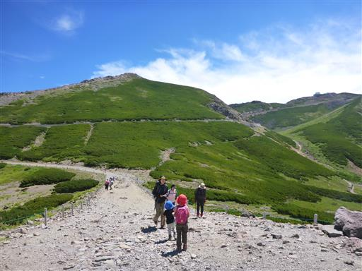
駐車場に到着。背後の恵比寿岳は近くから見ると非常に迫力がある。
この山に続くかつての登山道が薄ら見えるが、現在はガレが危険なため登山禁止だ。
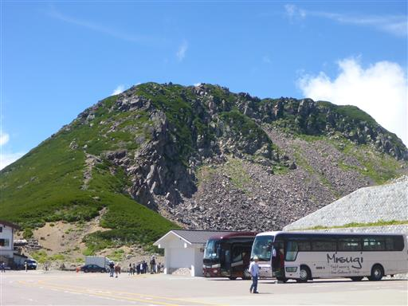
バスに乗って観光センター前の駐車場に戻ってくる。
乗鞍岳の山頂部はこの時間になっても雲がかからず、まだ見えている。
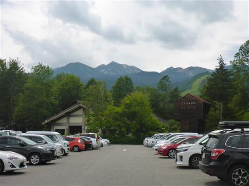
乗鞍高原から離れて本日宿泊予定の宿に向かう。
途中で番所大滝に立ち寄る。駐車場代500円と出ていたが、
長らく人はいないようで無料開放されている。
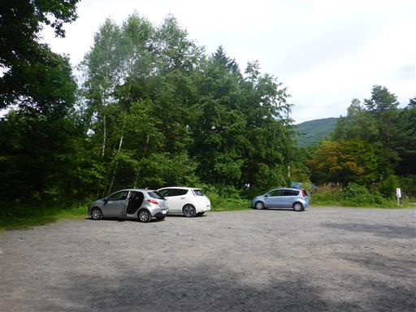
娘は疲れていると言って動かなかったため、娘と妻を残して息子と一緒に番所大滝を目指す。
この辺りは遊歩道もあるのだが立入禁止になっている。
乗鞍高原の中心部から外れているせいか人影は薄く、あまり人気が無いようだ。
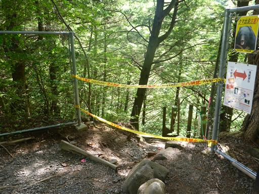
急な階段を5分ほど下ると滝見台に到着する。
落差40mの迫力ある滝だ。昨日訪れた三本滝、善五郎の滝と
この番所大滝は、乗鞍三滝と称されている。
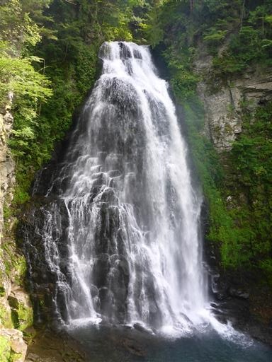
川の向こう岸は見事な岩壁だ。
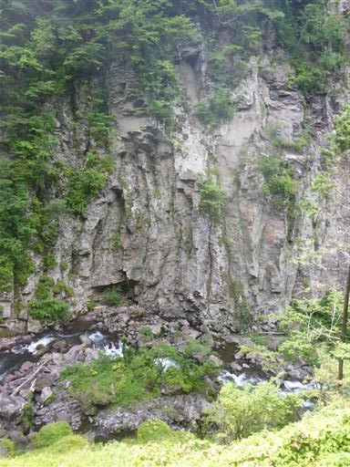
滝壺に近づける道を探して別の遊歩道を歩いてみたが
石が崩れ落ちていて道が荒れている。薄い板状に崩れているが板状節理だろうか？
道は思った方向に続いていなかったため、ここで引き返して駐車場に戻る。
これで乗鞍の観光はお終い。乗鞍に別れを告げて宿に向かう。
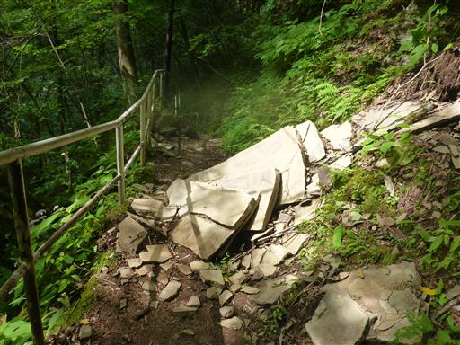
本日の宿泊地「しゃくなげ」に到着。
高山と乗鞍の間という中途半端な位置にポツリとある宿だ。
もともと三重で宿を取っていたが移動が大変なため、こちらに変更していた。
乗鞍岳登山が一日ずれたため、宿の変更は大正解だった。